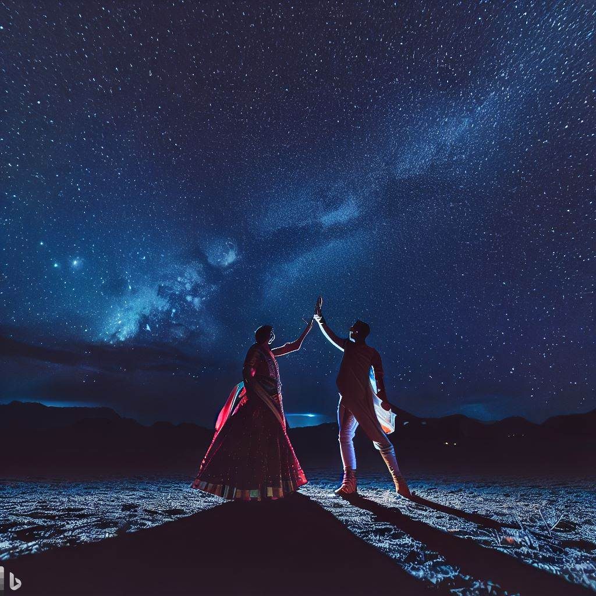

Postdoctoral Researcher (Adjunct Assistant Professor)
Institute of Astronomy – Faculty of Physics, Astronomy and Informatics
Nicolaus Copernicus University, Toruń, Poland
About Me
Education:
Bachelor and Master in Physics, Indian Institute of Technology Kharagpur.
Doctor of Philosophy in Astronomy and Astrophysics, University of Bonn.
Research Interests: Massive stellar and binary evolution, gravitational waves,
globular clusters, gamma ray bursts, core-collapse supernovae
Research

I work on various aspects of massive binary evolution discussed below.
Algol binary stars
The term "Algol" addresses its prototypical star Beta Persei, a bright multiple star system in
the Perseus constellation. It is one of the first stars recorded to
show a variation in its brightness, dating back to 1244--1163 B.C.
... For all Batman enthusiasts,
the word "Algol" is derived from the Arabic word "Ra's al-Ghul", or the head of the Demon. For a
more extensive historical background, see the Wikipedia page.
These systems have short orbital periods (a few days) and can, more often than not, be observable as
double-lined eclipsing binaries. Hence, they are ideal systems for studying stellar and binary properties
as precise measurements of their component masses, radii, and effective temperatures are possible.
Moreover, they constitute a long-lived phase of close binary evolution where we see the systems in a
unique configuration where the less massive star transfers mass to its more massive companion.
More than 50 massive Algol binaries have been observed across our Milky Way, Large Magellanic Cloud
and Small Magellanic Cloud combined.
The above properties of Algol binaries provide a unique test-bed to study our theories of massive
stellar and binary evolution, such as the physics of binary interaction directly. I study the
evolution of massive Algol binaries (Algols heavier the eight times the mass of the Sun)
using detailed binary evolution models computed using the software
MESA (Modules for
Experiments in Stellar Astrophysics). By directly comparing the predictions of the binary models
to the observed properties of the massive Algols, I derive constraints on binary and stellar
physics, such as mass transfer efficiency, internal mixing, stellar winds, etc.
Wolf-Rayet stars
Wolf-Rayet stars are the brighest and hottest stars observable in the sky. The spectra of these
stars show broad emission lines of hydrogen, helium, nitrogen, oxygen and/or carbon. They
give out strong radiation-driven winds, ...enriching the interstellar medium with various heavy
elements. While most Wolf-Rayet stars are expected to burning helium in their cores, there
is also a handful of them situated on the main sequence of the Hertzsprung-Russell diagram,
presumably thought to be burning hydrogen in their cores. These stars are thought to be the
direct progenitors of black holes and neutron stars! So, an understanding of the formation
and evolution of these systems directly refine our knowledge in the field of gravitational
wave astronomy, a blooming new field in recent times.
I have shown that the evolution of very massive binaries challenges the convention knowledge
of binary evolution, all related to the luminosity of these stars being close to their Eddington
luminosity. Observed counterparts have been identified confirming the existence of the novel
binary evolution channel where a more massive star can transfer mass to a less massive star at
the nuclear timescale (reverse Algols). Furthermore, the mass-donors can be observable as
Wolf-Rayet stars, with BAT99 #113 being the smoking gun. I am studying the observable properties
of this class of binaries to understand their impact on the formation of black holes and in turn,
the strongest sources of gravitational wave emission.
Compact object binaries Project description, including further links to posters, talks, publications.
How to make a website: Having a personal website is a small but significant step towards making
yourself more visible in the academic world. Here is the
Astrosites tutorial that I used to make my own!
How to plan and write a research paper: Writing the first research paper can be a daunting task.
There are a lot of books addressing the task, but here are two short articles discussing how to plan and
write a paper in astronomy.
(Biased) list of papers on the theory of massive binary evolution: Following is just one of the
many pathways that can be taken to start learning about massive binaries: Pols (1994) -> Wellstein et
al. (2001) -> Braun & Langer (1995) -> Nelson & Eggleton (2001) -> de Mink et al. (2007) -> Sen et al.
(2022). You can find them here.